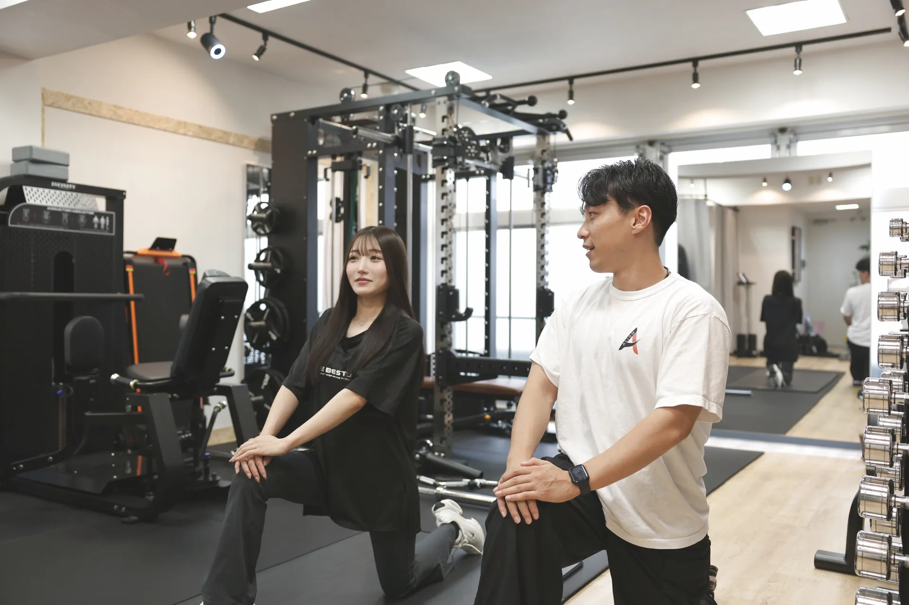
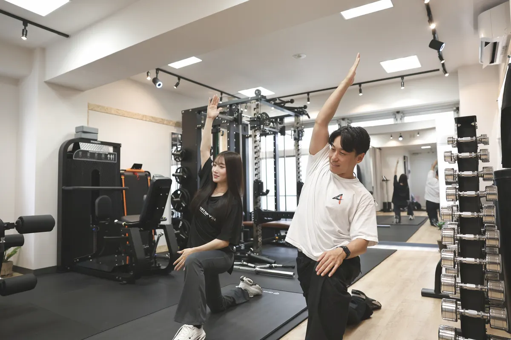

その場しのぎのストレッチで、また戻っていませんか。
ストレッチやマッサージでその場は軽くなっても、数日でまた元通り——多くの方が経験しています。理由はシンプルで、硬くなる「原因」である姿勢のクセが残ったままだから。伸ばすだけでは、根本は変わりません。
肩こり・首のこりが慢性化している
デスクワークやスマホで前かがみの姿勢が続き、ほぐしてもすぐ戻る。原因の姿勢から変える必要があります。
体が硬くて、動きがぎこちない
股関節・肩甲骨まわりの硬さは、姿勢の崩れとセット。可動域を広げると、見た目も動きも軽くなります。
反り腰・猫背で、疲れやすい
硬さと姿勢のクセが重なると、立っているだけで疲れる状態に。整えることで、毎日が楽になります。
ALIGNのストレッチは、「姿勢を整える」ためのストレッチ。
受け身でほぐしてもらう"もみほぐし専門店"とは、目的が違います。ALIGNは、あなたの硬さの原因（姿勢のクセ）にアプローチし、正しい身体の使い方まで一緒に見直します。だから、その場だけでなく“戻らない柔らかさ”を目指せます。

マンツーマンだから、あなたの硬さに合わせられる
硬さの出方も、原因も、人それぞれ。完全マンツーマンだから、痛みを我慢させず、その日のコンディションに合わせて可動域を広げます。考え方の詳細は コンセプト をご覧ください。
ストレッチ＋トレーニングで、"戻らない柔らかさ"へ
ゆるめるだけでなく、弱くなった筋肉を正しく使えるように。ピラティス×コンディショニングと組み合わせることで、柔らかさと安定を両立し、姿勢が定着していきます。
まずは90分の、体験セッションから。

はじめての方は、90分の体験セッションで、いまの硬さ・姿勢のクセを分析するところから。ビフォーアフター撮影で、その場で変化を確認できます。通常¥3,300のところ今月は先着10名様まで¥0、当日ご入会なら入会金¥22,000も¥0です。当日の流れは 体験を予約、料金は 料金プラン、★5.0・46件の お客様の声 もご覧ください。
硬さ・痛みが変わった方の声
元々トレーニング中に肩の痛みがあったのですが、ストレッチとコンディションを教えてくれて肩の痛みがなくなりました！
初回の今回は、トレーナーの的確な指導のおかげで自分では気づけなかった身体のクセや姿勢の歪みを分かりやすく言語化して教えていただき、早くも改善を実感できました。
よくあるご質問
ストレッチ専門店（もみほぐし）とは何が違いますか？
受け身でほぐしてもらう専門店に対し、ALIGNは「姿勢を整える」ためのパーソナルストレッチです。硬さの原因にアプローチし、正しい身体の使い方まで見直すので、“戻らない柔らかさ”を目指せます。
ストレッチは痛くないですか？
痛みを我慢して伸ばすことはしません。マンツーマンで、あなたの硬さやその日のコンディションに合わせて、心地よい範囲で少しずつ可動域を広げます。
どのくらいの頻度で通えばいいですか？
継続プランは月2回¥19,000〜が目安です。まずは90分の体験セッション（姿勢分析つき）から始められます。
運動が苦手・体が硬くても大丈夫ですか？
はい。体が硬い方・運動が苦手な方にこそ通っていただきたいです。元・保健体育教師のトレーナーが、あなたのペースで無理なく進めます。
栄・矢場町からのアクセスは？
栄駅7A出口から徒歩30秒、矢場町駅からも徒歩圏内です。仕事帰りにも通いやすい立地です。
関連ページ：姿勢改善（猫背・反り腰）／パーソナルピラティス（体幹）